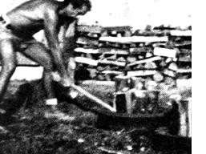

No "scratch" farmer discards bald pickup tires. There must be a hundred uses for the casings around the farm . . . and here's another one: the Tyrone Cornblatt Semi-Automatic Log Splitter. It solves, once and for all, the problem presented by those unruly chunks of stovewood that absolutely refuse to stand neatly on end while you whack 'em with an axe Or a maul and wedges.
The TCSALS, properly used, offers the following benefits: [1] any single chunk of firewood may be split as many times as desired in rapid succession without your ever having to chase the pieces around and "set 'em up" again, [2] the tire protects your maul or axe from strikes into rocks or dirt, no matter how wildlywithin reason-you might swing the implement, [3] a whole armload of split wood-held together, of course, by the tire-can be lifted onto the woodpile in one bunch, [4] the TCSALS doesn't cost anything, and [5] the TCSALS requires no fossil fuels for its operation and emits no noxious exhaust fumes.
It must be admitted that the TCSALS does consume a certain amount of human energy every time it's used ... but, to paraphrase Thoreau, "We're twice warmed by our firewood. First when we cut and split it, and second when it later crackles in the stove."
OK. Here-straight from the inventor-is your official set of instructions for the use of a TCSALS: Line up your old tires near the woodpile. Pack your log or logs tightly into the casings. Fire away with maul or axe.
That's it. Here in the Pacific Northwest, the main staple firewoods are red alder and Douglas fir . . . both of which are fairly easy to split. A heavy-duty maul should work on most any kind of wood, however (save your axe or hatchet for making kindling). The occasional stubborn, knotty chunk of stovewood calls for an attack with steel wedges and a sledgehammer.--Tyrone Cornblatt.
|
 Photo: TYRONE CORNBLATT'S |
|
|